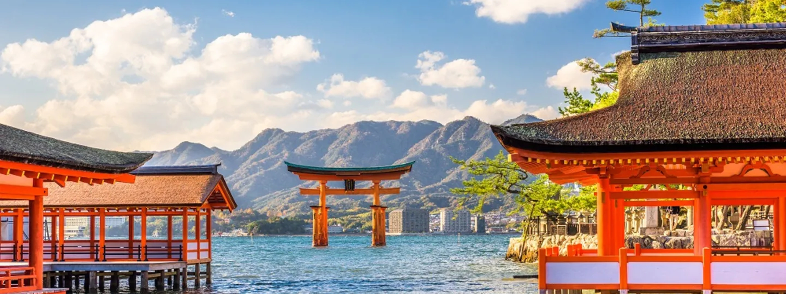

Explore Earth - Japan
Välkommen till Japan

Upptäck Japan – ett land som sträcker sig från det snöklädda Hokkaido i norr till de subtropiska öarna i Okinawa i söder. Med sina 377 975 kvadratkilometer erbjuder Japan en rik mångfald av platser att utforska. Hokkaido (83 456 kvadratkilometer): I Japans norra utpost lockar Hokkaido med vidsträckta lavendelfält i Furano, den dramatiska Shikisai-no-Oka-blomsterparken och avkopplande varma källor i Noboribetsu. Tokyo (2 194 kvadratkilometer): Huvudstaden, Tokyo, pulsar av liv och erbjuder allt från futuristisk skyline till trendiga butiker i Harajuku. Besök kejserliga palatsträdgården och de elektroniska kvarteren i Akihabara. Kyoto (827 kvadratkilometer): I hjärtat av Kansai-regionen bevarar Kyoto Japans gamla själ. Fushimi Inari Taisha, traditionella tehus och Arashiyamas bambuskogar är bara några av de många sevärdheterna. Osaka (190 kvadratkilometer): Matälskares paradis, Osaka, erbjuder historia i form av Osaka slott, nattliv i Dotonbori-distriktet och läcker gatumat som okonomiyaki och takoyaki. Hiroshima (8 479 kvadratkilometer): Utöver den tragiska historien bjuder Hiroshima på hopp och återuppbyggnad. Peace Memorial Park, Miyajima Island och Hiroshimas spirande kultur väntar på att utforskas. Okinawa (2 281 kvadratkilometer): De subtropiska öarna i Okinawa är känt för kristallklart vatten och unik kultur. Shurijo slott, vita sandstränder och färgstarka Eisa-danser ger en smak av paradis. Varje region i Japan bär på sin egen unika charm och karaktär, vilket gör landet till en fascinerande plats att utforska. Välkommen till Japan, där varje hörn av landet berättar en unik berättelse.